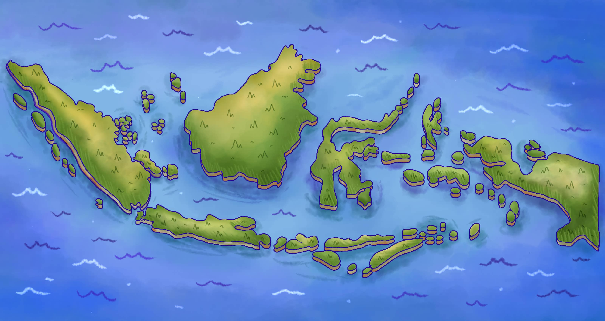

Masukkan nama panggilanmu sebagai anggota Paguyuban Detektif Nusantara:
"Salam Nusantara, Detektif KARSA! Komplotan misterius Bayang Sengkala baru saja beraksi serentak di 4 wilayah budaya kita: Yogyakarta, Bali, Jawa Barat, dan Sumatera Barat.
Mereka mencuri pusaka warisan dan meninggalkan potongan sandi. Segera pilih wilayah di Peta Misi Nusantara, temui Penjaga Loka setempat, dan selamatkan budaya kita!"
Arahkan kursor dan klik pin merah di peta untuk menyelidiki kasus pencurian Komplotan Bayang Sengkala!
